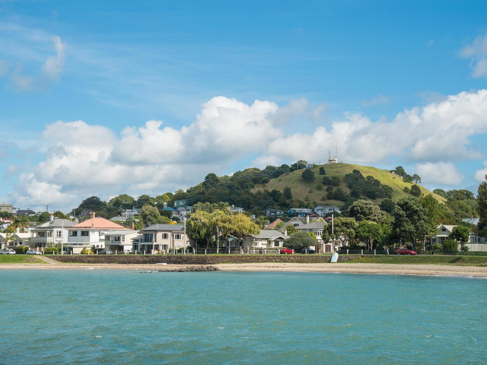
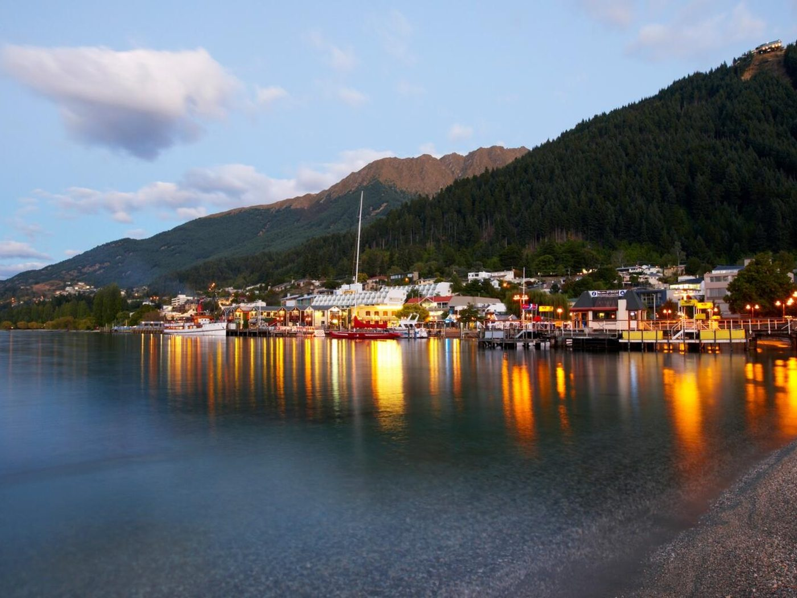
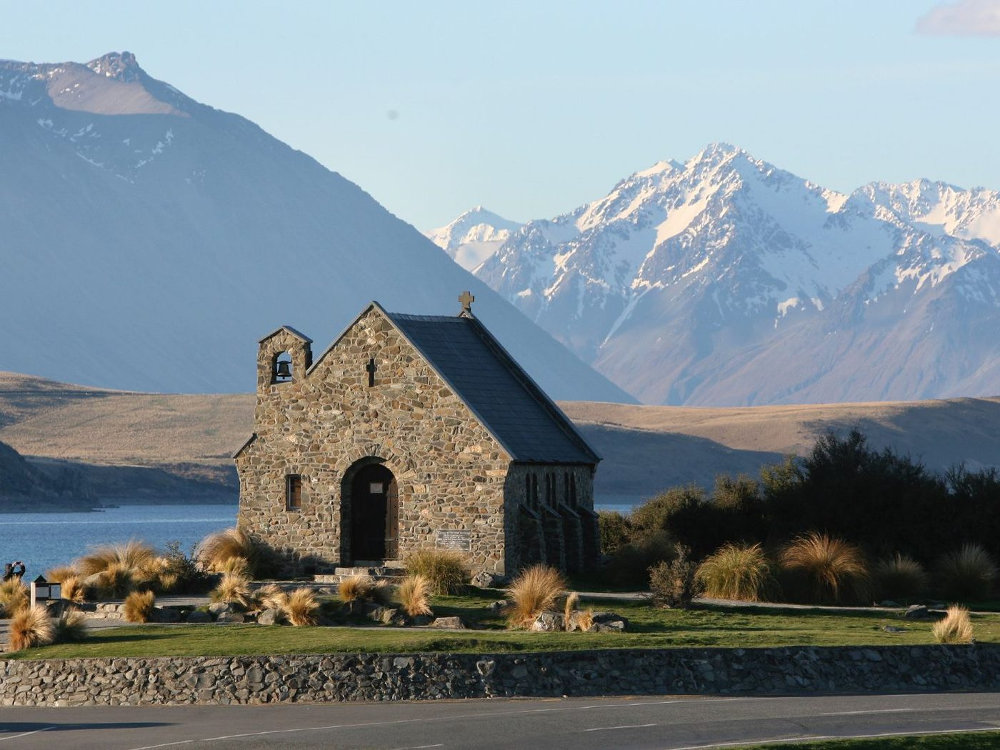
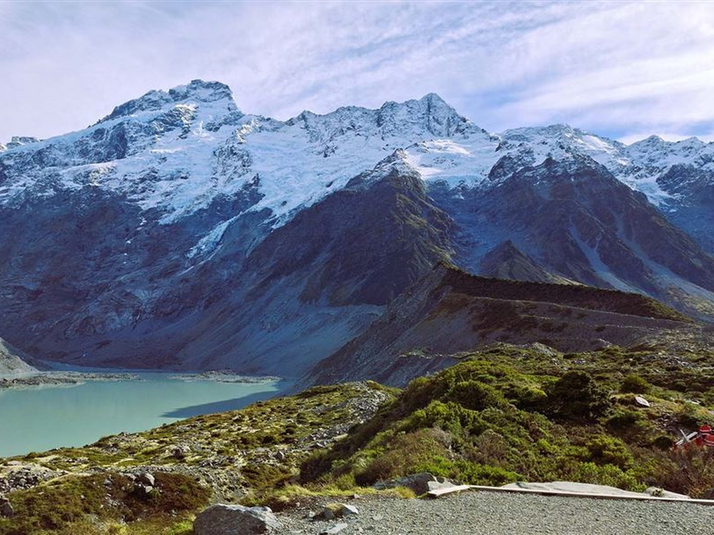
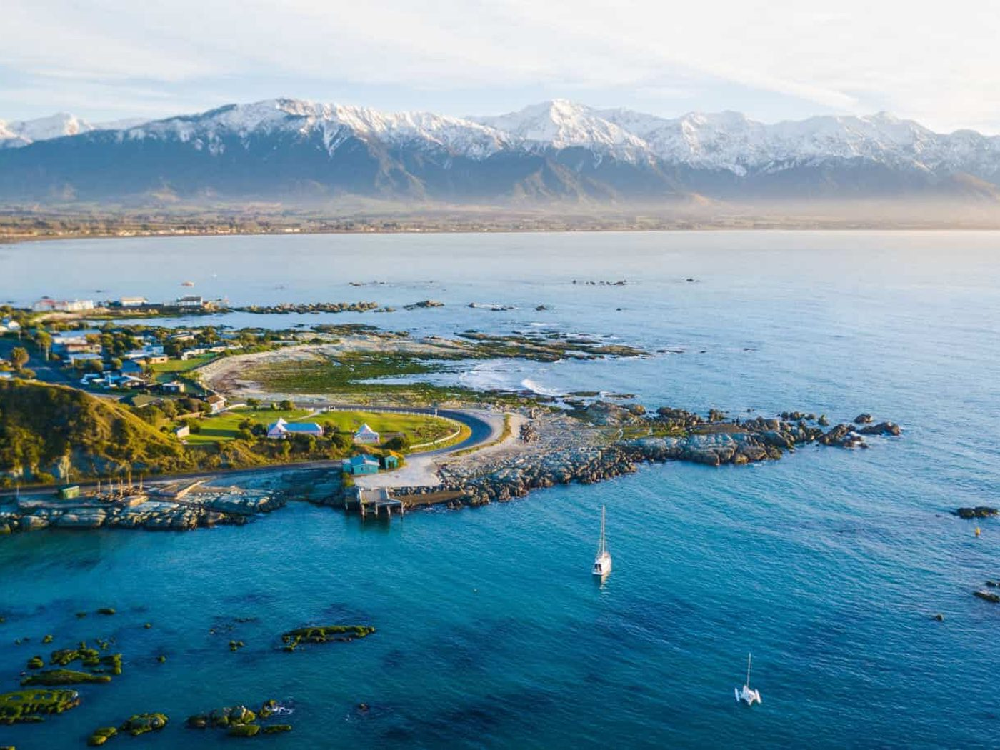
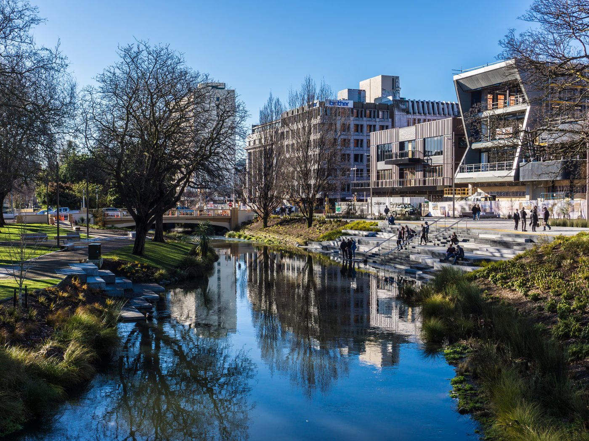

索
北京 → 奥克兰
CA687 · 波音 787 · 直飞
2/718:30北京 PEK
2/812:00奥克兰 AKL
2027 冬季新班期。起飞时间以北京时间为准，落地时间为新西兰当地时间。
AOTEAROA NEW ZEALAND · SOUTH ISLAND
从奥克兰的海风开始，把长途飞行的疲惫交给南半球悠长的夏日。 随后飞往皇后镇，沿着湖光、峡湾与雪山一路向北，让瓦纳卡的风、麦肯奇的星空和库克山的冰川在途中次第展开。 返程之前，把最后一天留给凯库拉的海岸鲸影，再回到基督城告别这段南岛夏日。
THE ROUTE
奥克兰休整后先飞皇后镇，再一路向北到库克山；返程前从基督城往返凯库拉观鲸。
TRANSPORT
航班号与时间按已出票行程填写；代码共享航段请同时核对实际承运方、航站楼和行李直挂规则。
CA687 · 波音 787 · 直飞
2027 冬季新班期。起飞时间以北京时间为准，落地时间为新西兰当地时间。
NZ550 + CA784 · 已出票 · 奥克兰转机 4 小时 45 分
抵达奥克兰后从国内航站楼前往国际航站楼。若 NZ550 与 CA784 是分开出票，必须取出托运行李再重新托运。
AC791 + QF3194 · 已出票 · 温哥华转机
QF3194 的票面市场方为 Qantas；温哥华实际承运方、值机柜台与行李直挂规则以电子客票为准。
UA731 + UA8292 · 已出票 · 旧金山转机
UA8292 为代码共享航段，实际承运方和转机航站楼以电子票为准；抵达多伦多时间为当地时间。
出租车或预订接机 · 待定，大件行李优先
渡轮约 12 分钟 · 约半小时一班 · Pier 4 待复核
Air New Zealand · 目标 14:30 左右 · 具体班次待出票
08:10 → 09:56 · NZD 80 · 不可退
16:15 → 17:40 · 发车前 1 小时可改
InterCity 购票 ↗ · 08:05 → 12:05
Tekapo Shuttle 单程 · 08:00 → 09:20 · 行李随车需确认
预约车或酒店接驳 · 07:25 → 07:50 · 行李随车
优先包车经蒂卡波 · 约 17:15 到 · GL72 备选
07:30 去、16:35 回 · 当天往返基督城
出租车约 20-30 分钟 · 已从凯库拉提前返回
NZ550 · 14:20 → 15:45 · 接 20:30 CA784
马里奥蘑菇 · 日落与蓝调时刻 · 步行登顶约 15-25 分钟
早午海鲜 · 重点是三文鱼、生蚝和鳌虾
Queen Street / Commercial Bay · 可顺路去 Kitty Shop
Patagonia / Helly Hansen · Arc'teryx 可去 Outside Sports
大巴往返 + 游船 NZD 319/人起；大巴进飞机回 NZD 904/人
大巴进出 + 游船 ¥1,142/人；套餐 F 车去飞回 ¥3,560/人
08:00 单程进库克山 · 走 Hooker Valley · 入住 Hermitage
向 Hermitage 确认 Big Sky Stargazing · 无合适团则酒店周边自由观星
08:25 check-in · 08:45 出发 · 最多约 3 小时
Whale Watch Kaikoura · 上午出海 · 受风浪影响
PLACES & WEATHER
左右滑动查看地点介绍和当前天气。天气需要联网更新，离线时显示上次缓存。

北岛最大城市，海港与火山景观点缀市区。2/8 下午去德文港看日落和马里奥蘑菇，2/9 去 Fish Market，再自由闲逛购物，可顺路去 Kitty Shop。

瓦卡蒂普湖畔的度假小镇，湖景、购物和户外活动集中；这次住三晚，作为峡湾与瓦纳卡往返的基地。
峡湾国家公园深处的标志性峡湾，峭壁、瀑布与雨林紧贴水面；从皇后镇往返耗时长，但景观独特。
比皇后镇安静的湖滨小镇，以湖景、孤独的树和轻松步道出名，适合从皇后镇当天往返慢逛。

麦肯奇盆地的冰川湖小镇，以奶蓝色湖水和暗夜星空闻名；2/12 住一晚，2/13 上午乘 Shuttle 前往库克山。

新西兰最高峰奥拉基/库克山所在地。2/13 从蒂卡波单程进山，走 Hooker Valley 后入住 Hermitage；2/14 上午参加冰川徒步，下午包车去基督城。

海岸山脉与观鲸小镇。2/15 从基督城当天往返，上午出海，傍晚返回基督城；返程前不再分叉其他路线。

南岛门户，2/14 从库克山抵达，2/15 往返凯库拉观鲸，2/16 从基督城机场返程。
天气数据：Open-Meteo · 照片为对应地点实景影像，来源见 README
DAY BY DAY
点选日期查看当天交通、活动与建议住宿。
WHERE TO STAY
已确认住宿单独标出，其余仍为建议名单，尽早预订。
皇后镇暂无万豪系酒店。截至 2026 年 11 月，万豪官方新西兰酒店目录只列出奥克兰的 JW Marriott Auckland 和 Four Points by Sheraton Auckland。
2/13 已改住库克山。Haka House 只保留 2/12 一晚，确认订单是否包含需要取消的 2/13。
14 号退房后行李随车。直升机结束后优先包车经蒂卡波去基督城，不需要再回酒店取行李。
TASTE OF THE ROAD
先保留各地想吃的关键词和待补充位置，餐厅与具体菜品到出发前再确认。
餐厅与菜品 待补充
餐厅与菜品 待补充
餐厅与菜品 待补充
餐厅与菜品 待补充
餐厅与菜品 待补充
餐厅与菜品 待补充
餐厅与菜品 待补充
2026 米其林一星：Inati 周日、周一休；Tussock Hill 仅午市。按本次抵达时间均无法安排。
BEFORE YOU GO
可直接勾选，完成状态仅保存在当前设备的浏览器中。
GOOD TO KNOW
米尔福德峡湾、库克山、观星和凯库拉观鲸都受天气影响；凯库拉停航时保留半岛步道和午餐，当晚仍回基督城。
米尔福德、瓦纳卡、Hooker Valley 和凯库拉行程当天只带背包，大箱留在酒店。
新西兰 2 月使用夏令时，与中国相差 5 小时。页面时间均为目的地当地时间。
Google Maps 和实时天气需要联网；行程主体在页面加载后仍可离线查看。